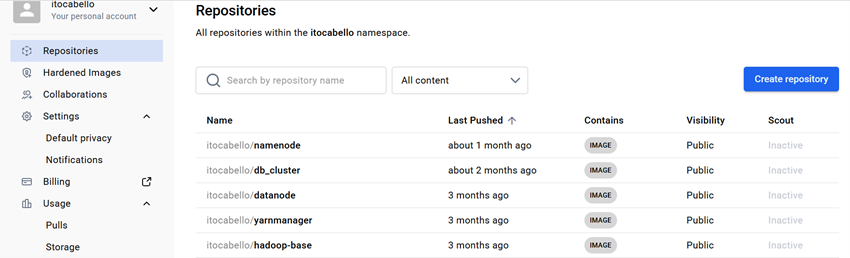

Capítulo 4. Arquitectura de Contenedores para el Despliegue del Entorno Big Data
Arquitectura de Contenedores para el Despliegue del Entorno Big Data
Arquitectura de Contenedores para el Despliegue del Entorno Big Data
El ecosistema Hadoop permite integrar diferentes herramientas especializadas para el desarrollo de infraestructuras Big Data. En este proyecto se han seleccionado tecnologías de código abierto ampliamente utilizadas tanto en entornos profesionales como académicos, permitiendo construir un laboratorio completamente funcional para el despliegue, procesamiento y análisis de datos masivos.
Ubuntu 22.04 LTS ha sido seleccionado como sistema operativo base para toda la infraestructura del proyecto. Esta distribución GNU/Linux, desarrollada por Canonical y basada en Debian, destaca por su estabilidad, seguridad, facilidad de administración y amplio soporte para herramientas del ecosistema Big Data.
Jupyter Notebook se utiliza como entorno interactivo para el desarrollo de las prácticas del curso. Permite crear documentos que combinan código, explicaciones, gráficos y resultados de ejecución.
Hadoop constituye el núcleo de la infraestructura Big Data desplegada. Sobre esta versión se instalan los diferentes componentes del ecosistema utilizados durante las prácticas del proyecto.
Apache Hive proporciona una capa de almacenamiento y consulta sobre Hadoop, permitiendo trabajar con grandes volúmenes de información mediante un lenguaje similar a SQL denominado HiveQL.
Las imágenes Docker desarrolladas para este proyecto se encuentran publicadas en un repositorio Docker Hub, permitiendo que cualquier estudiante pueda descargar el entorno completo sin necesidad de construir manualmente cada imagen.

Figura. Repositorio Docker Hub utilizado para distribuir las imágenes del proyecto.
| Tecnología | Versión | Finalidad |
|---|---|---|
| Ubuntu | 22.04 LTS | Sistema operativo base. |
| Docker | Última estable | Virtualización ligera mediante contenedores. |
| Docker Compose | Última estable | Orquestación del clúster. |
| Apache Hadoop | 3.4.0 | Procesamiento y almacenamiento distribuido. |
| Apache Hive | 3.1.3 | Consultas SQL sobre Hadoop. |
| Jupyter Notebook | Actual | Desarrollo de prácticas. |
La combinación de Ubuntu, Docker, Docker Compose, Apache Hadoop, Hive y Jupyter Notebook proporciona una plataforma Big Data moderna, ligera y fácilmente reproducible. Esta infraestructura permite a los estudiantes desplegar un clúster Hadoop completo en un entorno local y realizar prácticas de procesamiento distribuido sin necesidad de disponer de hardware especializado.